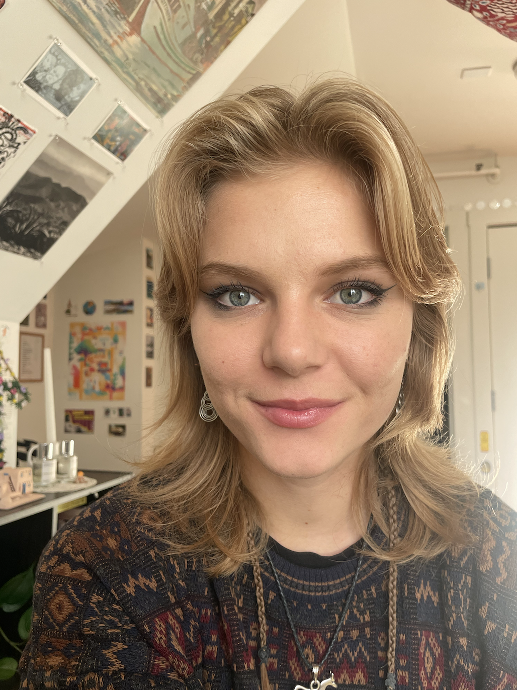
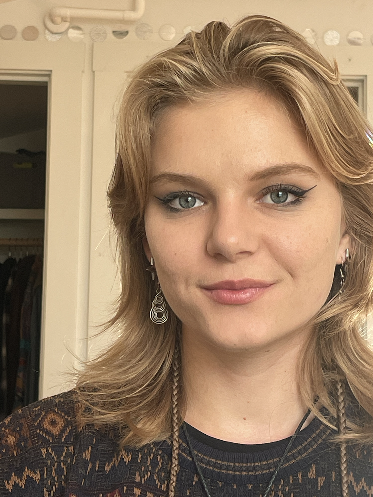
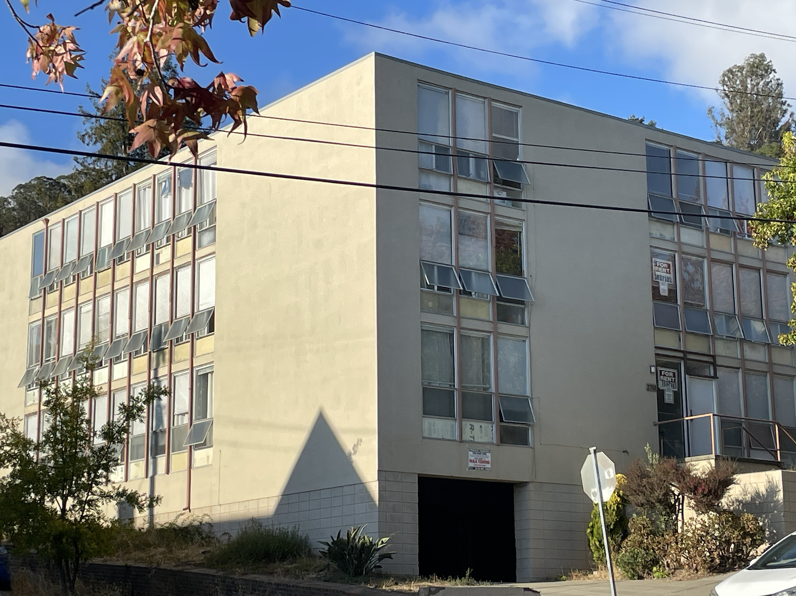
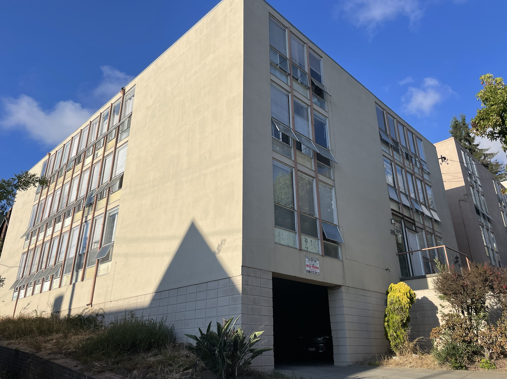
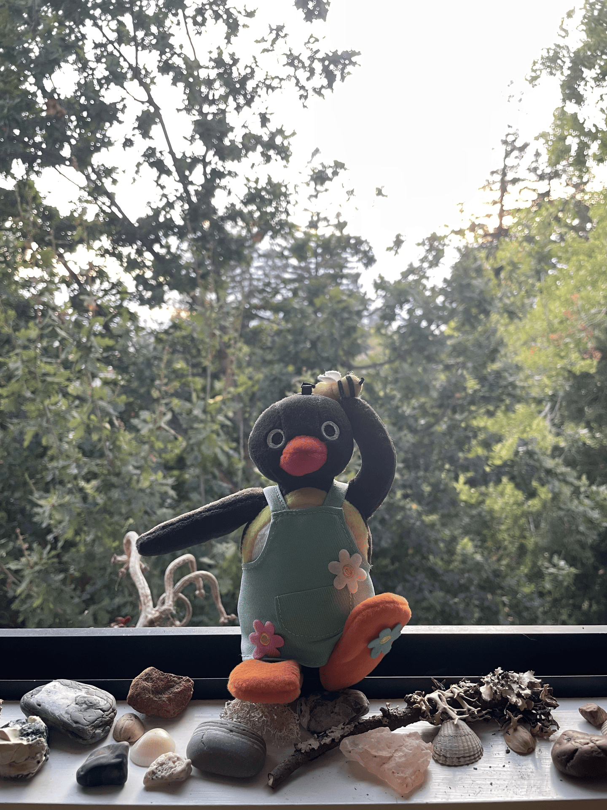

The image on the left was taken very close to Anette, and led to a distortion of their features. The image on the right was taken a few feet away and zoomed in, creating an image that much more closely resembles how Anette looks in real life

Anette close up (1x zoom)

Anette farther away and zoomed in (3x zoom)
The image on the left was taken farther away from the building and zoomed in, causing it to appear flatter. The image on the right was taken closer up and not zoomed in, creating a more forced perspective

Building far away and zoomed in (2.5x zoom)

Building close up (1x zoom)
This GIF is made up of 6 images taken in succession by physically backing away from Pingu while zooming in with the camera

Dolly Zooming in on Pingu